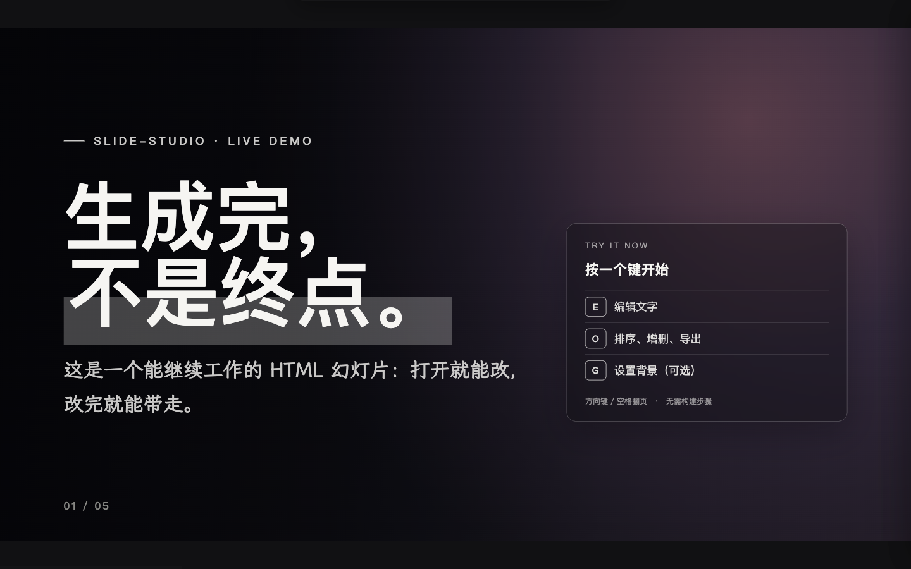

模型提供理解、推理和候选决策。一次生成只是一种输出，还不能证明任务已经完成。
AI
01
AI / AGENT / HARNESS
我的理解
AI 的价值不止于生成，
而在于进入一条可验证的任务链。
Agent 在环境中推进得到授权的任务，读取结果并更新下一步，让推理真正进入行动。
Harness 把概率模型放进确定性外壳：保留状态、限制权限、验证结果，并在失败时恢复或交给人。
02
AI TO B / AI TO C
我的理解
To B 与 To C，
解决的是两种不同的问题。
把模型放进组织系统。
价值来自真实业务结果：模型需要接入数据、权限和流程，并通过评测、回退与运营持续工作。PoC、可用、上线和规模化是不同结论。
让 AI 越来越理解一个人。
价值来自持续的个人上下文和更低的行动成本：记住偏好、理解当下目标、在授权内完成任务，并让用户始终知道它做了什么。
03
SELECTED WORK / REAL ARTIFACTS
项目
PROJECT / 01OPEN SOURCE · MIT

PROJECT / 02ANDROID PROTOTYPE · OPENMINIS
PERSONAL AGENT
让手机里的 Agent，
带着上下文做事。
基于 OpenMinis 的 Android Personal Agent 原型：结合持续记忆、可复用 Skill 与设备能力理解不完整的请求，并把关键行动留在用户授权之下。
完成“AI居民”品牌、默认 Agent 身份与安全迁移；用户自定义身份不会被覆盖。
预装 Global Memory、Calendar Butler 和 Miaoda Game Remix，并用资源与安装路径测试确认。
加入千帆快捷接入，完成定向测试、Android APK 构建与公开 Demo Release。
VERIFIED / 01品牌与身份迁移
VERIFIED / 02Skills 与千帆接入
VERIFIED / 03APK 构建与公开 Release
UNCONFIRMED / 04真机安装与跨 App E2E
BOUNDARY Android 构建与定向测试已通过；完整 Harness Core 尚未接入产品，真机安装、启动及跨 App E2E 尚未验证。
04
AI COLLABORATIVE DEVELOPMENT
AI 协作开发
把模型放进一条
可以审阅的开发链。
我用 Codex、Claude Code 等工具辅助阅读材料、分析仓库、实现和验证；目标、事实边界、关键判断和最终验收由我负责。
- 01 / SOURCE
分析一手材料
仓库、文档、日志和历史构成事实底座。
- 02 / FRAME
界定目标与边界
明确约束、责任和完成标准。
- 03 / BUILD
在仓库中实现
形成可审阅、可比较的变更。
- 04 / VERIFY
验证用户结果
检查测试、浏览器与最终产物。
05
EXPERIENCE / SELECTED SCOPE
过往经历
从模型与数据，
走到方案与交付。
百度 · 企业云与 AI 方案
连接需求、能力与交付边界
从企业需求与能力映射出发，通过 PoC 识别 GAP，并以证据界定交付和验收范围。
字节跳动 · 多模态 Prompt
把模型优化变成可评估的任务
用样本反馈、任务拆解与标准化测试推进多模态 Prompt 迭代。